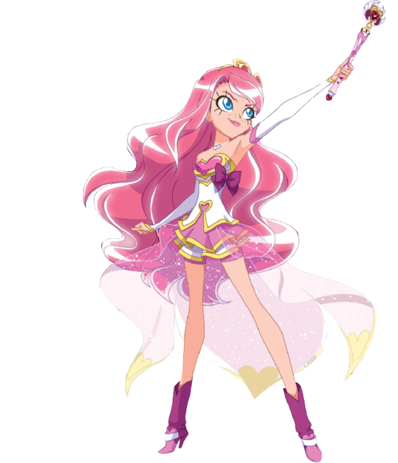
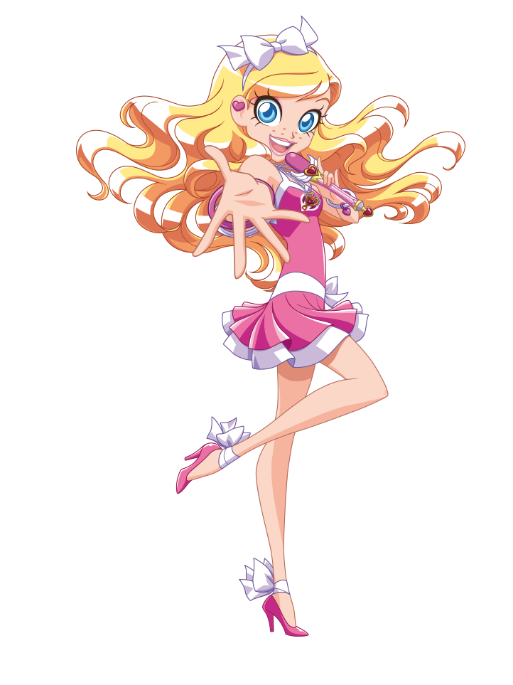
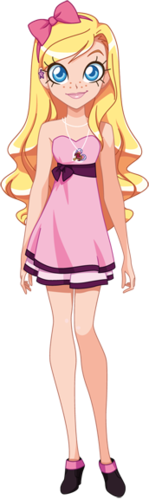
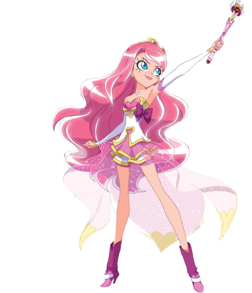
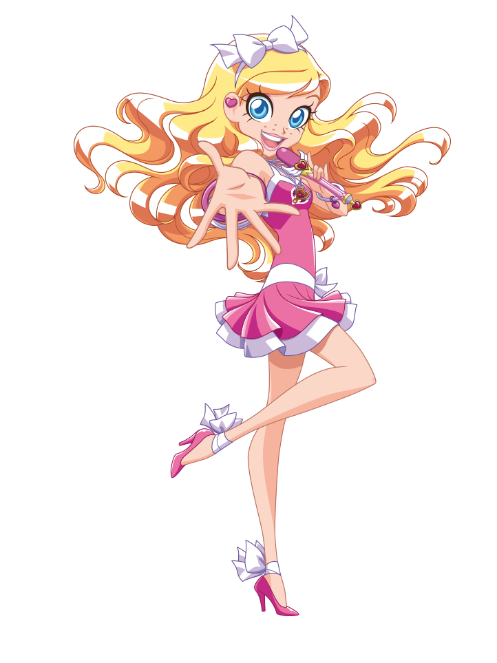
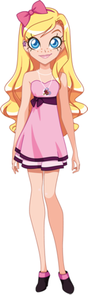

|
Iris
Iris è la principale protagonista della serie LoliRock.
E' la principessa di Ephidia e anche un membro della band LoliRock.
È una quindicenne che vive a Sunny Bay, dotata di grande altruismo e senso della giustizia.
E' innamorata di Nathaniel. È la più romantica del trio.
E' una ragazza generosa e altruista propensa ad aiutare tutti.
I suoi hobby sono cantare e ballare. È anche appassionata di musica e ama esibirsi con la sua band
Ha gli occhi azzurri, carnagione pallida e i capelli biondi ondulati, ma quando si trasforma i suoi capelli diventano rosa.
Il suo oggetto di trasformazione è una collana dal ciondolo a cuore color rosa, oro e bianco.
Come seconda arma possiede una spada di cristallo rosa
|
| Regno | Ephedia |
| Amici | Talia, Auriana, Lyna, Carissa, Doug, Nathaniel |
| Nemici | Gramorr,Praxina, Mephisto |
| Passioni | Cantare, Frullati, Aiutare gli altri |
| Odia | Litigare con gli amici, Pipistrelli |
| Poteri | Cristallo magico |
| Arma | Scettro di Ephidia |
| Oggetto | Collana |
|

 




